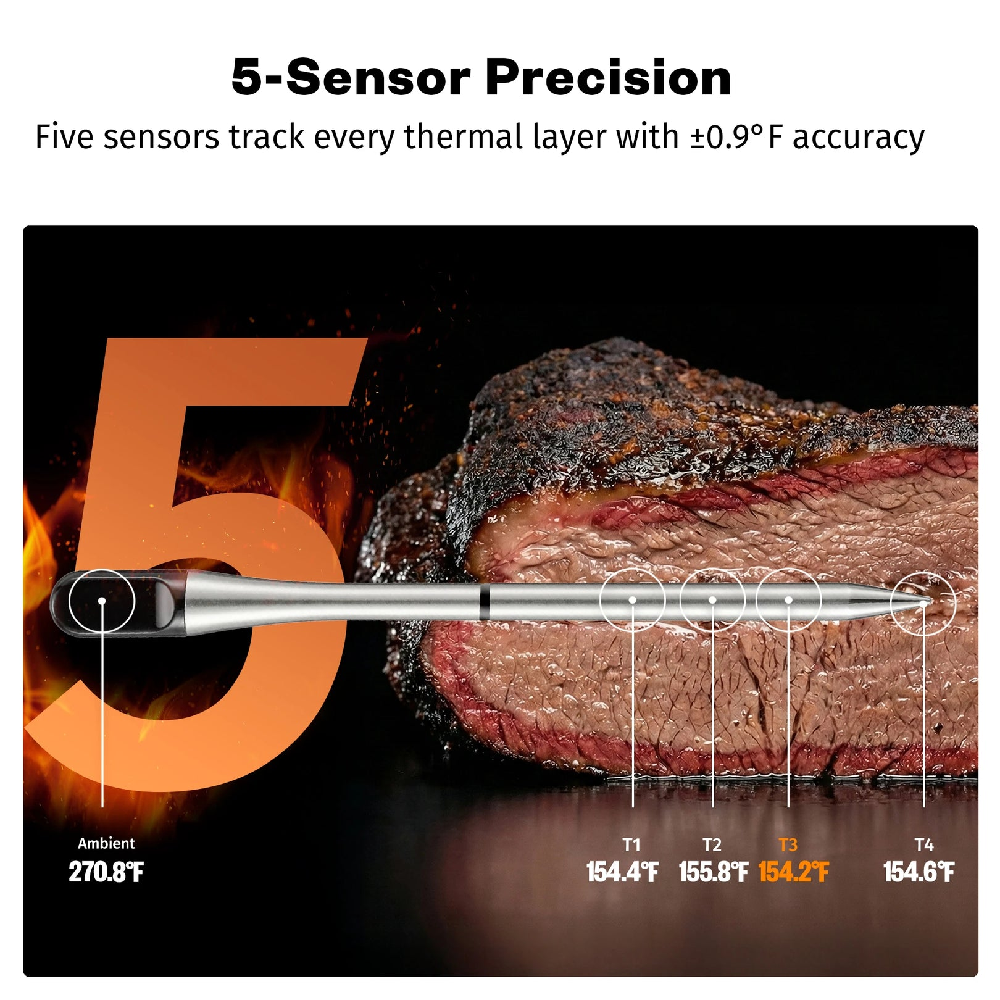
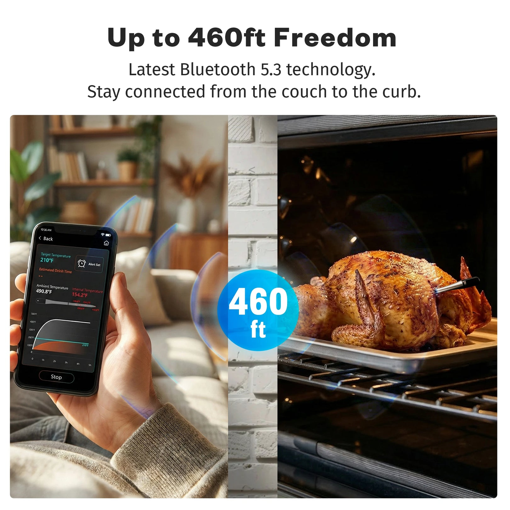
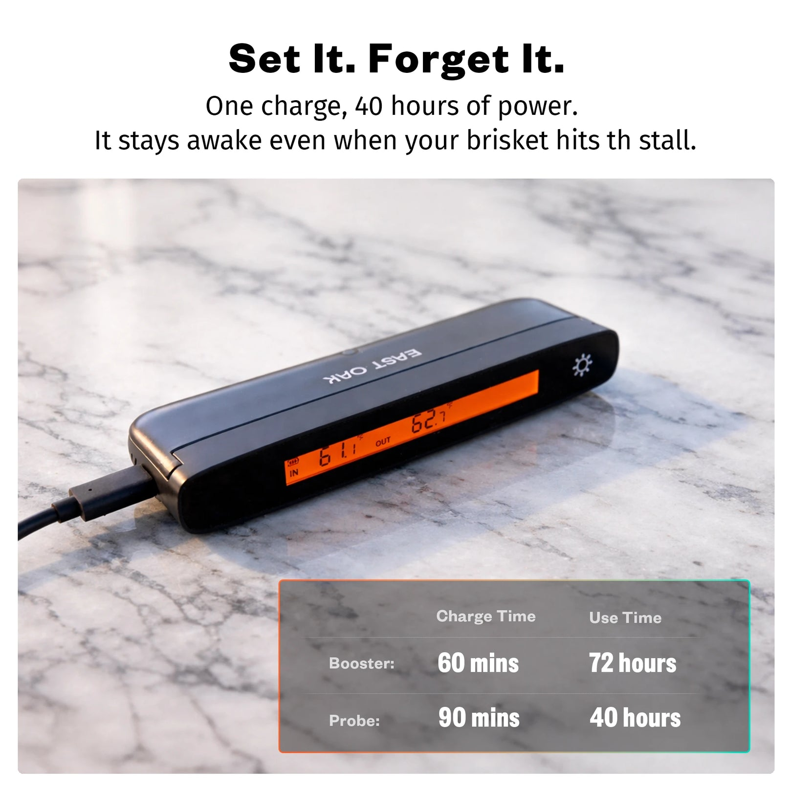
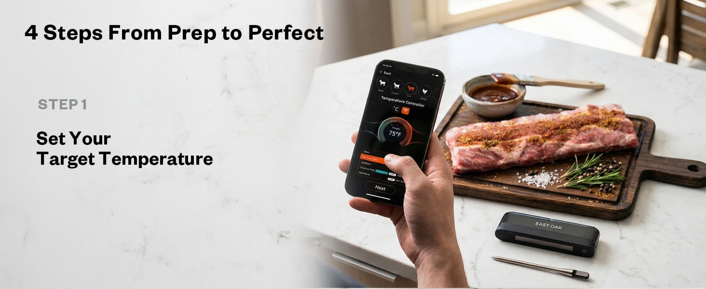
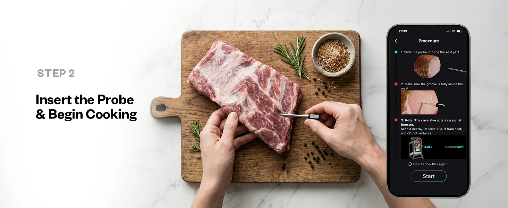
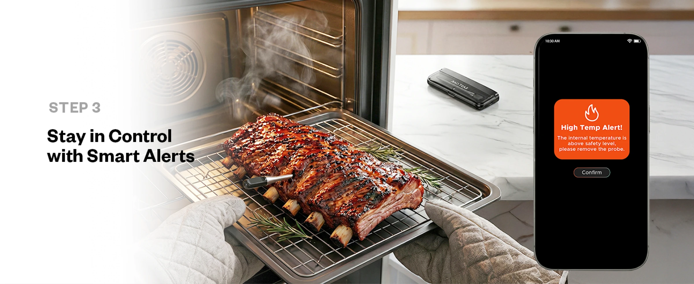
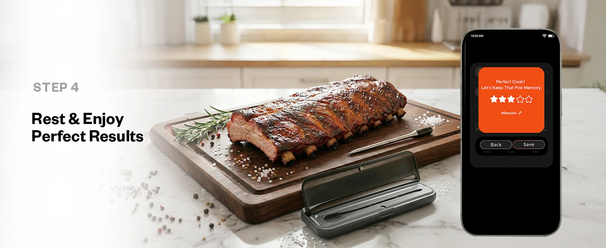

COMMERCIAL VISUAL · AMAZON LISTING
把复杂参数，变成用户一眼能懂的购买理由。
为 EAST OAK 无线肉探针设计 Amazon PDP 与 A+ 内容。围绕五个传感器、932°F 高温、IP68 清洁与 App 远程监控，统一信息层级与视觉语言。
- SCOPE
- PDP · A+ CONTENT
- ROLE
- 视觉方向 · 信息结构 · 版式设计
- OUTPUT
- 10 PDP · 10 A+ ASSETS
01 · PDP SYSTEM
先让核心卖点在缩略图里也能被看懂。
每张图只承担一个信息任务：分别解释精度、高温、连接范围、智能控制和续航。



02 · A+ CONTENT

03 · USAGE STORY
把第一次使用拆成四个连续步骤。
从设定温度到静置完成，用户不用离开页面就能理解完整操作过程。



